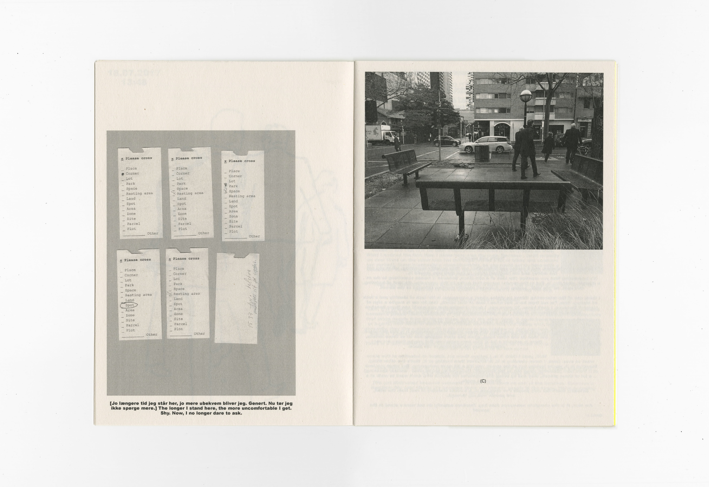
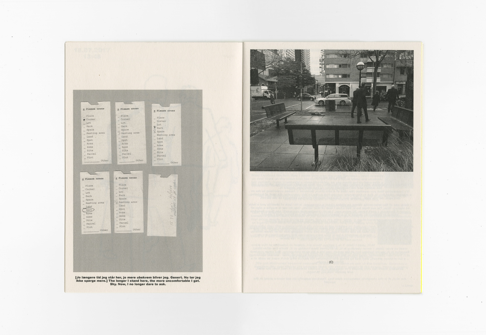

Lot 4/TP866378
Dane-is-culture
Fødekæden
Oliver
Johnston St Vet Clinic
Lars Batting's Bakery
Lot 4/TP866378 – a place with a space
A site-specific booklet and visual research of Lot 4/TP866378 (the corner of Little Lonsdale St. and Exhibition St.) and Marc Augé's idea of the non-place. Research which generated a considerable amount of content (more than I expected) through which my hypothesis of the lot as a non-place was proven incorrect. The Lot turned out not only to be a place; but a place with a space.

 

B/W Xerox on newsprint and yellow fluoro stock, bound with string and glue.
Thanks to Cameron for the conversation ☺